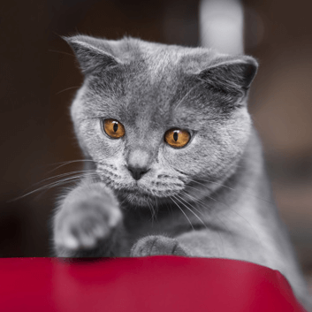
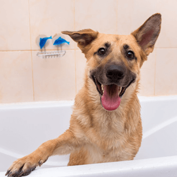

Doação de sangue pet
Doação de sangue o que você precisa saber?
requisitos para caninos
1-É necessário que o pet tenha entra 1 a 8 anos.
2-Peso mínimo de 20kg.
3-doador não possua doenças preexistentes ou que tenha passado por cirurgias nos 30 dias anteriores à doação.
requisitos felinos
1- É necessário que o pet tenha entra 1 a 7 anos.
2-Peso mínimo 4kg.
3-Além do controle de pulgas e carrapatos, os doadores também precisam estar com a vermifugação e vacinação atualizadas.
informaçoes→
Cadastre-se
Veja alguns exemplos de como seu cadastro pode ajudar inúmeros pets

Muito se fala sobre a importância da doação de sangue, mas o que muitas pessoas não sabem é que ela também é fundamental entre os bichos de estimação. Cães e gatos podem ser doadores e ajudar a salvar outros animais.

Após uma infecção, o cachorrinho Sheik, um Pug de seis anos, teve anemia e precisou receber uma transfusão sanguínea. Rapidamente, a tutora Erika Fragoso Monteiro mobilizou nas redes sociais uma campanha e conseguiu dois doadores, que foram levados à Clínica Jacó, onde o procedimento foi agilizado.